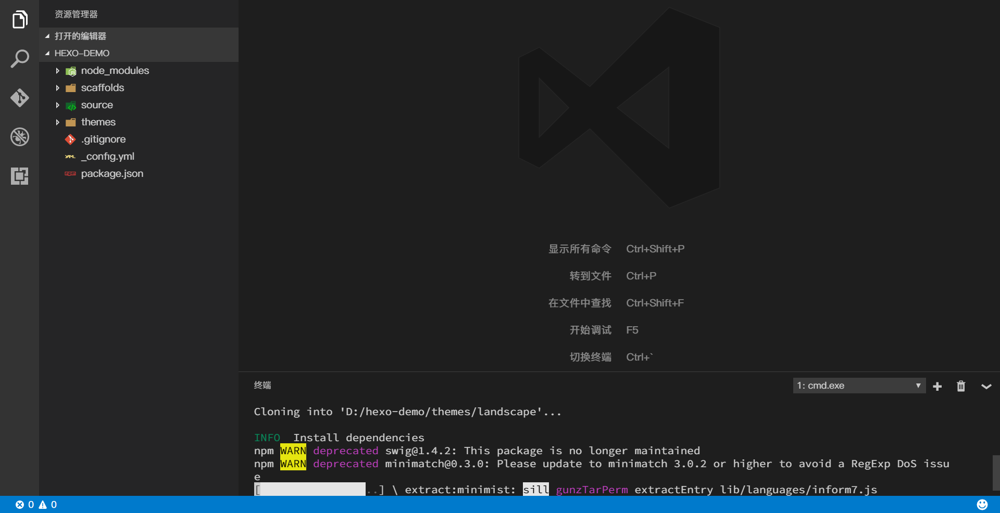
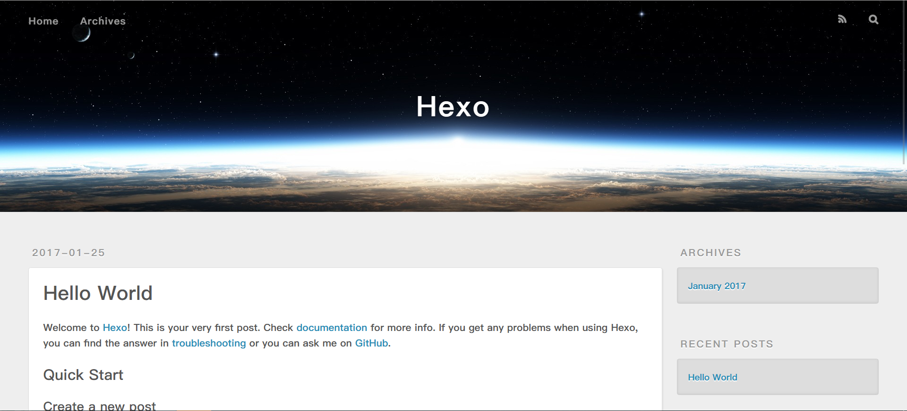

生命中的每一次Hello，一定深深打动过你的心
序言 & 扯淡
几个月前一次偶然的机会，我发现了 Hexo 这个博客框架。
Hexo 基于 nodejs，速度很快以及一键部署十分方便，满足了我的建站需求，于是乎心里种下了这么一颗草——用 Hexo 框架搭建属于自己的博客。自己搭建博客与在别的平台上写博客的感觉还是不同的，比如在自定义方面，自己搭建博客简直是为所欲为呀。
但几个月来一直没有付诸行动。😑
实习结束，秋招上车，总算能有一段清闲的时间了。最近在看 ES2015 的书以及 Angular 2，就在这恣肆的海洋中畅游时，偶然那么一天，心血来潮，于是乎，维特陈先森的博客诞生了！
本人使用的操作系统是 Windows 10 ，macOS 和 Linux 下相应的操作会有些许不同。
准备工作
编辑器 || IDE
关于编辑器的选择，比较自由，自己喜欢才最重要。在这里我用的是微软家的 Visual Studio Code，本人十分推荐使用“地表最强”—— Intellij IDEA 及其家属，前端开发者当然用 Webstorm 咯～不过，他家的产品酷炫是酷炫，就是要收费（什么破解？要什么自行车？#手动滑稽）
Node.js 运行时环境
前面说到 Hexo 是基于 Node.js 环境的，所以没有安装 Node.js 的小伙伴请先自行下载安装。安装 Node.js 时会自带安装好 npm 包管理工具，后面的操作会用到 npm 包管理工具。
用
node -v和npm -v命令检查是否安装成功D:\>node -v && npm -v v7.4.0 4.0.5 D:\>Git
Hexo 官方文档指出需要用到 Git ，Hexo 的源码放在 Github 上，安装 Hexo 时需要 git 命令。没有安装的小伙伴也先下载安装
用
git --version命令检查是否安装成功D:\>git --version git version 2.10.1.windows.1 D:\>安装 hexo-cli
必备应用程序安装完毕后，就可以用 npm 安装 Hexo 了。我们后续编写、管理博客都会用到
hexo命令。D:\>npm install -g hexo-cli用
hexo -v命令检查安装情况D:\>hexo -v hexo-cli: 1.0.2 os: Windows_NT 10.0.14393 win32 x64 http_parser: 2.7.0 node: 7.4.0 v8: 5.4.500.45 uv: 1.10.1 zlib: 1.2.8 ares: 1.10.1-DEV modules: 51 openssl: 1.0.2j icu: 58.2 unicode: 9.0 cldr: 30.0.3 tz: 2016j
至此，Hexo 的基本环境搭建就完成了。下面开始我们的 Hello Hexo 工程！😉
开启 hexo-demo 工程
找一块空地，新建一个文件夹，这里新建的文件夹叫 hexo-demo ，同时，建完就转移工作阵地。
D:\>mkdir hexo-demo && cd hexo-demo
前面的准备工作最后一步安装了 hexo-cli ，有了它，我们可以非常轻松的初始化一个 Hexo 项目。
D:\hexo-demo>hexo init
随后我们可以看到控制台一系列的 git clone 操作以及 npm 模块的安装。一小段时间过后安装完毕，用我们伟大的编辑器打开项目吧！
若碰到 npm 模块安装过慢甚至失败（在天朝，因为一些墙的原因），可以将 npm registry 换做淘宝镜像，或者换成 cnpm
我们也可以在打开编辑器后再执行 hexo init 命令。下图为本人的 Visual Studio Code，快捷键 Ctrl + ` 打开终端，功能等同于 cmd 。

PS. 也许你会觉得我的 VS Code 和你的长的不同，这里我修改了应用程序的 CSS 源文件，全局使用苹果家的萍方字体，配合 Mactype 渲染，赏心悦目 😝 。VS Code 是个 Electron 应用，有兴趣的小伙伴可以研究研究哦。
初始化完毕，我们不妨先看看博客效果。
用
hexo s命令启动服务器，默认端口为4000，浏览器访问 localhost:4000
D:\hexo-demo>hexo s

文件夹目录
.
├── _config.yml
├── package.json
├── scaffolds
├── source
| ├── _drafts
| └── _posts
└── themes
_config.yml
全局配置文件，包装于全局对象
config中，比如，编写主题时会使用。package.json
npm包配置文件
scaffolds
模板文件，在新建一篇文章时，可以选择性使用模板
source
博客资源内容所在，其中
_drafts文件夹包含草稿文章，_posts包含正式文章。除
_posts文件夹之外，开头命名为_(下划线)的文件 / 文件夹和隐藏的文件将会被忽略。Markdown 和 HTML 文件会被解析并放到 public 文件夹，而其他文件则直接复制过去。themes
主题文件夹，Hexo根据主题生成静态页面，当前默认主题是 landscape 。
新建一篇文章
用
hexo new命令新建一篇文章
D:\hexo-demo> hexo new "hexo-demo"
INFO Created: D:\hexo-demo\source\_posts\hexo-demo.md
hexo-demo.md 文件即 Markdown 格式的博客文件，现在默认内容应该为
|
|
---之间的内容称为Front-matter，即关于个别文件的变量参数。预定义的参数包括布局，标签，标题，日期等。
在 Front-matter 后另起一行，随便写两句话吧，保存文件，重启服务器，我们可以看到文章列表中多了一篇名叫 hexo-demo 的文章。
生成静态文件
如果我们需要部署博客到某些静态页面托管服务时，这时候我们需要博客的静态页面。
笔者知道的静态页面托管服务不多，考虑大陆环境以及海外用户的请求速度，目前页面用到了 GitHub Pages 和 Coding Pages。(给 Coding 网站当回水军#手动滑稽)
使用 hexo g 命令生成静态文件
D:\hexo-demo> hexo g
INFO Start processing
INFO Files loaded in 243 ms
INFO Generated: fancybox/blank.gif
INFO Generated: index.html
INFO Generated: archives/index.html
INFO Generated: fancybox/fancybox_loading@2x.gif
INFO Generated: fancybox/fancybox_overlay.png
INFO Generated: fancybox/jquery.fancybox.css
INFO Generated: fancybox/fancybox_loading.gif
INFO Generated: fancybox/fancybox_sprite@2x.png
INFO Generated: fancybox/fancybox_sprite.png
INFO Generated: archives/2017/01/index.html
INFO Generated: archives/2017/index.html
INFO Generated: css/fonts/FontAwesome.otf
INFO Generated: fancybox/helpers/jquery.fancybox-thumbs.css
INFO Generated: fancybox/jquery.fancybox.js
INFO Generated: fancybox/helpers/jquery.fancybox-buttons.css
INFO Generated: css/style.css
INFO Generated: fancybox/jquery.fancybox.pack.js
INFO Generated: fancybox/helpers/jquery.fancybox-media.js
INFO Generated: js/script.js
INFO Generated: fancybox/helpers/jquery.fancybox-buttons.js
INFO Generated: fancybox/helpers/jquery.fancybox-thumbs.js
INFO Generated: css/fonts/fontawesome-webfont.woff
INFO Generated: fancybox/helpers/fancybox_buttons.png
INFO Generated: css/images/banner.jpg
INFO Generated: css/fonts/fontawesome-webfont.ttf
INFO Generated: css/fonts/fontawesome-webfont.eot
INFO Generated: css/fonts/fontawesome-webfont.svg
INFO Generated: 2017/01/24/hexo-demo/index.html
INFO Generated: 2017/01/25/hello-world/index.html
INFO 29 files generated in 802 ms
我们会发现根目录多了一个 public 文件夹，同时 db.json 文件也写入了相关信息。 public 文件夹中就是我们要的静态文件。
如果想清除之前生成的静态文件以便于干净清爽的重新生成，我们可以用
hexo clean命令达成目的
D:\hexo-demo> hexo clean
INFO Deleted database.
INFO Deleted public folder.
部署工作
Hexo 自带部署功能，只要我们提供相应的仓库地址便可一键完成部署。
在根目录下的
_config.yml文件中，加入deploy配置。_config.yml 12345678910(....)deploy:- type: gitrepo: https://github.com/ChenShihao/chenshihao.github.io.gitbranch: master- type: gitrepo: https://git.coding.net/chenshihao/chenshihao.coding.me.gitbranch: master使用命令
hexo d部署